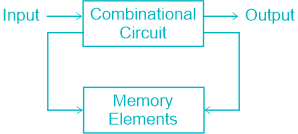
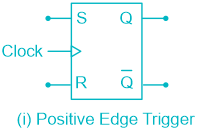
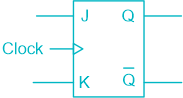
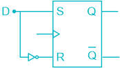
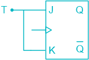

05 Sequential Circuits
Flip-Flops
Introduction
Sequential circuits are made up of combination circuits & memory
elements.

The binary data stored in the memory elements is known as state
of the memory elements.
| State | Represented by |
|---|---|
| Previous state | Q n-1 |
| Present state | Q n |
| Next state | Q n+1 |
If the output depends upon present state than it is ‘ Moore
●
Sequential Circuits ’
If the output depends upon present state & external input, then it is
●
‘ Mealy Sequential Circuit ’.
The Moore & Mealy Models of Sequential circuits are commonly
●
known as ‘ Finite State Machines (FSM) ’
Types of Sequential Circuits
Synchronous Sequential Circuit
All the memory elements are triggered simultaneously by a
common activating signal (known as clock pulse). It is generally ‘Edge triggered’.
It is easier to design.
●
Asynchronous Sequential Circuit
Different memory elements are triggered at random instants of time
independent of each other. It is generally ‘Level triggered’ It is more difficult to design.
●
Latches & flip-flops
Flip – Flops
Flip flop is a one-bit memory element which stores one bit of
information. Flip flop has two stable states so it is known as ‘bistable
multivibrator’.
Bloc diagram of flip-flop -
●
Flip flop used edge triggering.
The output changes as per the input only at triggering point.
●
Latch
A latch is a storage device that holds the data using the feedback
lane. The latch stores 1-bit until the device set to 1.
The latch changes the stored data & constantly trials the inputs
when the enable input set to 1. Latch is an electronic logic circuit with two stable states i.e., it is a
bistable multivibrator. In its simplest form, flip-flop is called a ‘Latch’, since it latches (or
locks) data in it. The Latches use level triggering’.
The output changes as per the input till enable is high.
A Latch employs cross-coupled feedback connections.
●
NOTE:
Under normal or valid operation, Q & are complement of each other.
𝑄 Whereas, 𝑄= 𝑄= 0 𝑄= 𝑄= 1 }𝐼𝑛𝑣𝑎𝑙𝑖𝑑 𝑠𝑡𝑎𝑡𝑒
Triggering
Level triggering
Input signals affect the flip-flop only when the clock is at logic ‘1’.
(i) Positive level triggering
(ii) Negative level triggering
Edge triggering
Input signals affect the flip-flop only if they are present at the positive
going or negative going edge of the clock pulse.
(i) Positive Edge triggering
(ii) Negative Edge triggering
It consists of two cross coupled NOR gates (NOR Latch) or NAND gates
(NAND Latch)
NOR Latch
Truth Table:
●
| S | R | Q n+1 |
|---|---|---|
| 0 | 0 | Q (Hold state) n |
| 0 | 1 | 0 (Reset state) |
| 1 | 0 | 1 (Set state) |
| 1 | 1 | Q = Q̅ = 0 (Invalid state) |
Characteristic Table:
●
| S | R | Q n | Q n+1 |
|---|---|---|---|
| 0 0 | 0 0 | 0 1 | 0 1 |
| 0 0 | 1 1 | 0 0 | 0 0 |
| 1 1 | 0 0 | 0 1 | 1 1 |
| 1 1 | 1 1 | 0 1 | Invalid state |
NAND Latch
•
Truth Table:
| S | R | Q n+1 |
|---|---|---|
| 0 | 0 | Q = Q̅ = 1 (Invalid state) |
| 0 | 1 | 1 (Set state) |
| 1 | 0 | 0 (Reset state) |
| 1 | 1 | Q (Hold state) n |
NOTE -
NAND Latch is also known as Latch.
𝑆𝑅 𝑜𝑟 𝑆 𝐶
Special Case -
Hold state applied immediately after invalid state in SR Latch.
Clocked S-R Flip Flop
Truth Table -
●
| Clock | S | R | Q n+1 | State |
|---|---|---|---|---|
| 0 | × | × | Q n | |
| 1 | 0 | 0 | Q n | Hold |
| 1 | 0 | 1 | 0 | Reset |
| 1 | 1 | 0 | 1 | Set |
| 1 | 1 | 1 | × | Invalid |
Characteristics Table -
●
| S | R | Q n | Q n+1 | State | |||||
|---|---|---|---|---|---|---|---|---|---|
| 0 | 0 | 0 | 0 | Q (Hold) n | |||||
| 0 | 0 | 1 | 1 | ||||||
| 0 | 1 | 0 | 0 | Reset | |||||
| 0 | 1 | 1 | 0 | ||||||
| 1 | 0 | 0 | 1 | Set | |||||
| 1 | 0 | 1 | 1 | ||||||
| 1 | 1 | 0 | × | I | nvalid | ||||
| 1 | 1 | 1 | × | ||||||
| Q n | Q n+1 | S | R | ||||||
| 0 | 0 | 0 | × | ||||||
| 0 | 1 | 1 | 0 | ||||||
| 1 | 0 | 0 | 1 | ||||||
| 1 | 1 | × | 0 |
Graphical symbol of S-R Latch
●

Problem : Invalid states are present when both the inputs ‘S’ & ‘R’ are
made HIGH (logic 1). To avoid this difficulty, we use J-K flip-flop.
J-K (Jack-Kilby) flip-flop
It Resolve the problem of invalid state of SR flip flop.
●
Truth Table of J-K flip-flop
●
| Clock | J | K | Q n+1 | State |
|---|---|---|---|---|
| 0 | × | × | Q n | |
| 1 | 0 | 0 | Q n | Hold |
| 1 | 0 | 1 | 0 | Reset |
| 1 | 1 | 0 | 1 | Set |
| 1 | 1 | 1 | Q̅ n | Toggle |
Characteristics Table
●
| J | K | Q n | Q n+1 | State |
|---|---|---|---|---|
| 0 | 0 | 0 | 0 | Q (Hold) n |
| 0 | 0 | 1 | 1 | |
| 0 | 1 | 0 | 0 | Reset |
| 0 | 1 | 1 | 0 | |
| 1 | 0 | 0 | 1 | Set |
| 1 | 0 | 1 | 1 | |
| 1 | 1 | 0 | 1 | Toggle |
| 1 | 1 | 1 | 0 |
Excitation table
●
Q n+1
J K 0 0 0 × 0 1 1 × 1 0 × 1 1 1 × 0
Characteristics Equation:
Q n+1 = J n + Q n 𝑄 𝐾
Graphical Symbol:
●

NOTE: Using JK flip-flop all other flip-flops can be designed thus it is known as ‘Universal flip flop’.
Race Around Condition in a JK flip flop
In race around condition, the output of the JK flip flop toggle more
than once, whereas, ideally it must toggle only once. It occurs when (i) J = K = 1 (ii) T PW (clock pulse width) > T PD (flip flop propagation delay) (iii) When level triggered is applied.
Solution:
This problem is resolved by ensuring the following condition
T PW < T PD < T CLK Or use Master Slave JK flip flop.
●
Master-Slave JK flip flop
The overall circuit act as a single flip flop and stores one bit.
At any instant, only one flip flop is triggered.
The problem of race around condition is not present in Master Slave JK
flip flop. The function table of Master Slave JK flip flop is same as JK flip flop.
●
D flip flop
It is a flip-flop with delay equal to exactly one cycle of clock.
It is also called ‘data transmission flip-flop’ & ‘Transparent Latch’.
●

The output follows the input (only on the active edges of the clock
pulse).
Truth Table
●
Cl K
D
Q n+1
0 × Q n 1 0 0 1 1 1
Characteristics Table
●
| D | Q n | Q n+1 | State |
|---|---|---|---|
| 0 | 0 | 0 | Reset |
| 0 | 1 | 0 | Reset |
| 1 | 0 | 1 | Set |
| 1 | 1 | 1 | Set |
Characteristics Equation:
Q n+1 = D
Excitation table:
●
| Q n | Q n+1 | D |
|---|---|---|
| 0 | 0 | 0 |
| 0 | 1 | 1 |
| 1 | 0 | 0 |
| 1 | 1 | 1 |
T flip flop
The designation ‘T’ comes from the ability of the flip flop to ‘Toggle’ or
‘change’ state.

Truth Table
●
| ClK | T | Q n+1 |
|---|---|---|
| 0 | × | Q n |
| 1 | 0 | Q n |
| 1 | 1 | Q̅ n |
Characteristics Table
T
Q n+1
0 0 0 0 1 1 1 0 1 1 1 0
Characteristics Equation:
Q n+1 = T ⨁ Q n
Excitation table:
●
| Q n | Q n+1 | T |
|---|---|---|
| 0 | 0 | 0 |
| 0 | 1 | 1 |
| 1 | 0 | 1 |
| 1 | 1 | 0 |
Conversion of flip-flops
Following are the steps to convert one kind of flip-flop into other kind
of flip-flop.
Step 1:
Step 2 : Write down the characteristics table of desired flip-flop followed
by excitation table of given flip-flop.
Step 3 : Using K-map derive the expression for available flip-flop in terms
of desired flip-flop.
NOTE: -
Some standard Conversion:
●
| To obtain ↓ | From → | S | R | J | K | D | T |
|---|---|---|---|---|---|---|---|
| SR | - | - | S | R | S + R̅Q n | SQ̅ + RQ n n | |
| JK | JQ̅ n | KQ n | - | - | JQ̅ + K̅Q n n | JQ̅ + KQ n n | |
| D | D | D | D | D | - | D ⨁Q n | |
| T | TQ̅ n | TQ n | T | T | T ⨁Q n | - |
To obtain any flip flop from the D – flip flop, simply apply the
characteristics equation of that flip – flop on the ‘D’ input.